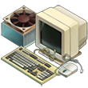
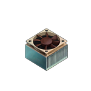
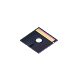
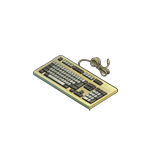
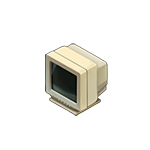
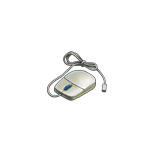

Получено: файл; исходный URL. Иллюстрация в отдельной статье ViveR_9 «Коллекция компа»; исходный файл без перекодирования. Авторство отдельно не установлено. Страница: источник.

Коллекция компа
ВКонтакте; дата источника не указана- Тип
- Коллекции
- Версия и дата
- ВКонтакте; дата источника не указана
Элементы коллекции
















Данные по источнику · ВКонтакте · дата источника не указана
Предварительно: один источник; требует сверки. Требуется сверка.
- Награда
- 5 чёрных сердец и 300 опыта
- Где копать
- Клады на островах Любви и Майя, бизнес-центр
- Состав (источник Zombie-island)
- Проц; 5 дюймов; Клава; Моник; Мыша.
- Награда (источник Zombie-island)
- 5 Черное сердце; 300 Опыт.
- Где копать Коллекцию компа в Зомби Ферме лопатами
- Истукан; Истукан 2; Истукан 3; Облако; Слоник; Весенняя ваза 3; Весенняя ваза 2; Весенняя ваза 1.
- Коллекцию компа носят Кладоискатели
- Кладоискатель; Кладоискатель с мозгами.
- Коллекцию компа можно найти в Секретном кладе, сокровищах и ценностях
- Секретный клад; Сундук Черепуши; Большая бочка; Сюрприз бригады; Термо-яйцо; Сундук Чудовища 3.
- Коллекция компа выпадает при разборе ресурсов Палочками
- Палочка-выручалочка; Ресурс Рок-рука.
- Коллекцию компа можно найти на Пиратских островах Зомби Фермы
- Пиратский сундук.
Данные по источнику · браузерная версия; платформа не указана · дата редакции не установлена
Предварительно: Содержимое списка: изображения и колонки могут терять смысл при извлечении текста; отдельная страница и дата не проверены. Подписи alt иногда ошибочны.. Требуется сверка.
- Текст карточки из каталога
- 5 Чёрных сердец и 300 опыта Проц 5 дюймов Клава Моник Мыша Где копать: Облака, недостроенный НЛО недостроенная голубая ракета, марафонец
Данные по источнику · Мой Мир (Mail.ru); историческая таблица · дата редакции не установлена
Предварительно: Источник сам использует знаки вопроса; не следует считать такие места подтверждёнными. Возможны изменения патча и платформы; независимость от других справочников не доказана.. Требуется сверка.
- Название в источнике
- Коллекция компа
- Где копать
- Камни самые маленькие
- Награда
- 5 чёрных сердец и 300 опыта
Данные по источнику · браузерная версия; на сайте указана игра ВКонтакте · дата редакции не установлена
Предварительно: Исторический текст; сильно совпадает со справкой Zommbie.at.ua, независимость не доказана. Отрицания и доступность могут измениться с патчем.. Требуется сверка.
- Где искать по странице «Зомбастики»
- На момент текста предметы попадаются только в секретных кладах и мешках кладоискателя.
Данные по источнику · браузерная социальная версия; платформа по источнику или не уточнена · 14.11.2017 — дата статьи
Предварительно: Историческая статья; версия и её точная редакция нуждаются в сверке. Возможны общие источники.. Требуется сверка.
- Состав
- Клава, проц, мышь, пять дюймов, моник.
- Обмен
- 5 чёрных сердец и 300 опыта.
- Поиск
- У друзей: каменный истукан (три варианта), облака (три вида), статуя слона, три весенние цветочные вазы. В подземелье палочкой над зелёной рукой.
- Дополнительные источники
- Мешки кладоискателей, смартфон, яйцо с Терминатором, сундучки Черепуши, Дракоши и Чудовища №3, космическая капсула, музыкальный плеер, сюрприз бригады, супер-очки, большая бочка, секретный клад.
Данные по источнику · историческая браузерная социальная версия ВКонтакте; редакция неизвестна · дата публикации и последующей редакции не проверена
Предварительно: Фанатский источник; актуальность, вероятности и независимость от других справочников не установлены.. Требуется сверка.
- Состав
- Проц, 5 дюймов, Клава, Моник, Мыша — написание ViveR_9; в других источниках встречается «Мышь».
- Обмен
- 5 Чёрных сердец и 300 опыта.
- Получение
- В Космической хижине (рецепт не указан); при вскрытии Сундука, Термо-яйца, Трофейного ящика, Космической капсулы, Плеера, Смартфона и других ценностей; Кладоискатель и Кладоискатель с мозгами.
- Палочки
- Октавий, Пончик-перевёртыш и один подземный ресурс без уточнённого названия.
- Лопаты у друзей
- Флаг Марафонца, облака 1–3, Слоник, Мастер урожая, истуканы 1–3, Марафонец, Весеннее настроение, Весенняя ваза, Секретный клад.
- Применение
- «Экспедитор-2», Звёздный автомат, Луноход, Немосфера, Телефонная будка, Летающая тарелка; упомянуты задания. Количества не указаны.
Данные по источнику · историческая браузерная версия, платформа не указана · 10.01.2014 — дата в каталоге; дата редакции материала неизвестна
Предварительно: Фанатский список без вероятностей и уточнения площадки; независимость от других источников не установлена.. Требуется сверка.
- Где искать по списку сайта
- На данный момент предметы этой коллекции попадаются только в секретных кладах и мешках кладоискателя.
- Оговорка
- Список может относиться к разным условиям, инструментам и периодам игры; не доказывает гарантированное выпадение. Заявления «только» и «невозможно» относятся лишь к времени и версии источника.
Данные по источнику · историческая браузерная игра; площадка не уточнена · 26.02.2013 — дата каталога; редакция неизвестна
Предварительно: Проверен текст в каталоге сайта; вероятность выпадения не указана. Исторические версии и даты могут различаться; списки и награды требуют сверки, независимость сайта от других справочников не установлена.. Требуется сверка.
- Награда в источнике
- 5 чёрных сердец и 300 опыта
- Места в источнике
- Облака, недостроенный НЛО, недостроенная голубая ракета, марафонец. В названии каталога опечатка «Копма»; даты адреса и каталога различаются.
Связанные сущности
нет проверенных связей — требуется сверка.
Источники
- прочитано; проверка 2026-11-21
- прочитано: Zombie-island.moy.su; проверка 2026-11-21
- ZOMBIA: прочитана карточка в списке
- Ссылка на отдельную страницу; отдельно не проверена
- Zombiemail: строка таблицы коллекций; Мой Мир
- Зомбастики: прочитана соответствующая строка; возможная копия другого справочника
- Прочитанная историческая статья
- ViveR_9: прочитанная отдельная статья
- zommbie.at.ua: где искать коллекции
- zombi-ferma.ucoz.net: каталог коллекций